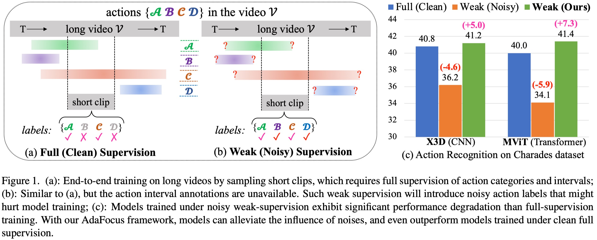

Contribution #1
An AdaFocus learning framework is proposed, which adaptively focuses on actions and clips with cleaner supervision, enabling efficient weakly supervised end-to-end training on long videos;
Developing end-to-end models for long-video action understanding tasks presents significant computational and memory challenges. Existing works generally build models on long-video features extracted by off-the-shelf action recognition models, which are trained on short-video datasets in different domains, making the extracted features suffer domain discrepancy. To avoid this, action recognition models can be end-to-end trained on clips, which are trimmed from long videos and labeled using action interval annotations. Such fully supervised annotations are expensive to collect. Thus, a weakly supervised method is needed for long-video action understanding at scale. Under the weak supervision setting, action labels are provided for the whole video without precise start and end times of the action clip. To this end, we propose an AdaFocus framework. AdaFocus estimates the spike-actionness and temporal positions of actions, enabling it to adaptively focus on action clips that facilitate better training without the need for precise annotations. Experiments on three long-video datasets show its effectiveness. Remarkably, on two of datasets, models trained with AdaFocus under weak supervision outperform those trained under full supervision. Furthermore, we form a weakly supervised feature extraction pipeline with our AdaFocus, which enables significant improvements on three long-video action understanding tasks.

An AdaFocus learning framework is proposed, which adaptively focuses on actions and clips with cleaner supervision, enabling efficient weakly supervised end-to-end training on long videos;
Experimental results across three long video datasets and six CNN-based or Transformer-based models validate the effectiveness of AdaFocus. Remarkably, on the two largest datasets, AdaFocus enables models trained under weak (noisy) supervision to outperform those trained under full (clean) supervision;
Using AdaFocus, a new feature extraction pipeline for long-video understanding that minimizes domain discrepancy is established for long-video datasets. This framework yields significant performance improvements across three downstream long video understanding tasks: temporal sentence grounding, long-video activity recognition, and action segmentation.
We will release all the newly extracted long-video features. Stay tuned!
Efficiently end-to-end training on long videos under weak supervision is challenging. This work proposes a weakly supervised end-to-end training framework named AdaFocus, which adaptively focuses on actions and clips with cleaner supervision for model optimization. Experimental results on three datasets show that our AdaFocus can help weakly supervised models perform better than noisy supervised models, sometimes even fully supervised models. Moreover, with our AdaFocus framework, the long-video feature extraction pipeline is rebuilt, which significantly improves the performance of existing models on three long-video action understanding tasks, providing better foundations for the development of long-video action understanding.
THIS is a long-term maintenance project, and will support more long-video datasets and long-video action understanding tasks in the future.
@article{zhou2023adafocus,
title={AdaFocus: Towards End-to-end Weakly Supervised Learning for Long-Video Action Understanding},
author={Zhou, Jiaming and Li, Hanjun and Lin, Kun-Yu and Liang, Junwei},
journal={arXiv preprint arXiv:2311.17118},
year={2023}
}